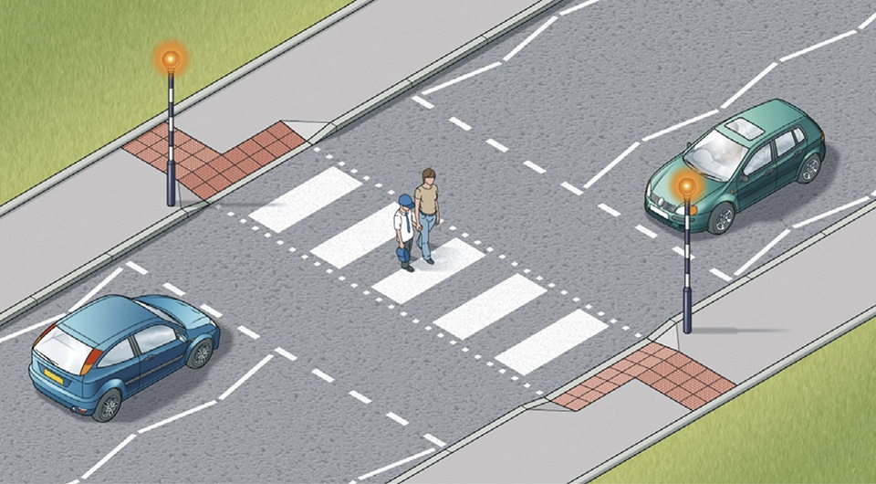
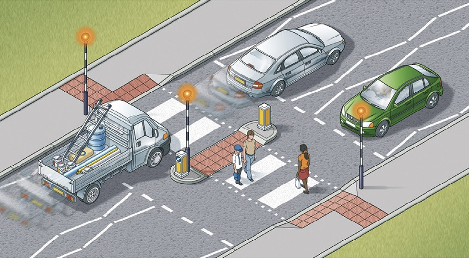
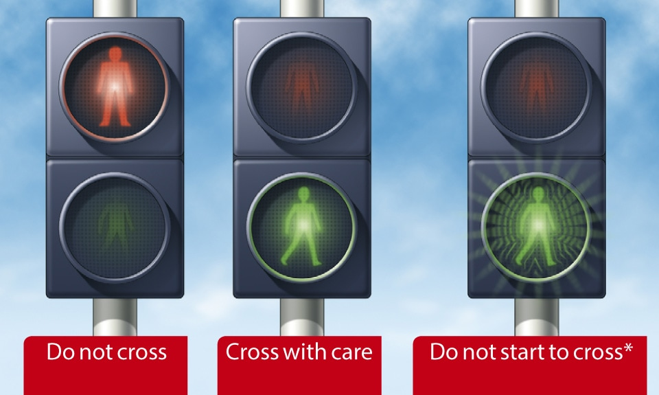
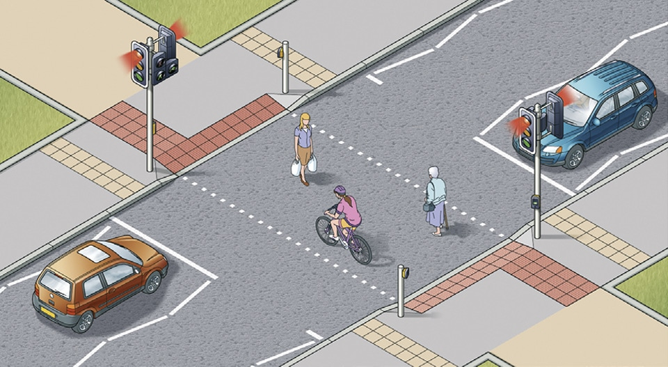
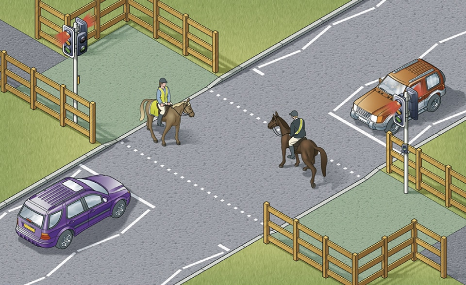
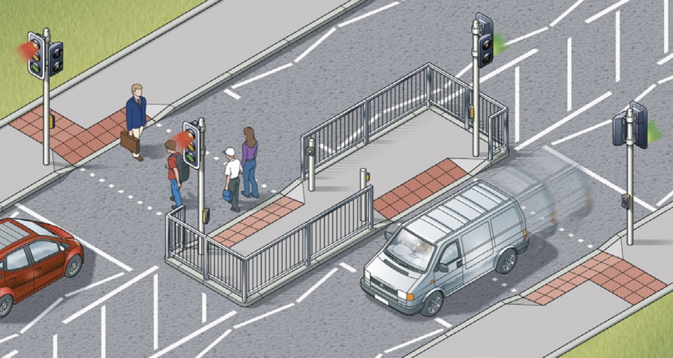

Rules for pedestrians (1 to 35)
3. Crossings (18 to 30)
18
At all crossings. When using any type of crossing you should
Laws ZPPPCRGD reg 19 & RTRA sect 25(5)
19
Zebra crossings. Give traffic plenty of time to see you and to stop before you start to cross. Vehicles will need more time when the road is slippery. Wait until traffic has stopped from both directions or the road is clear before crossing. Remember that traffic does not have to stop until someone has moved onto the crossing. Drivers and riders should give way to pedestrians waiting to cross and MUST give way to pedestrians on a zebra crossing (see Rule H2). Keep looking both ways, and listening, in case a driver or rider has not seen you and attempts to overtake a vehicle that has stopped.
At all crossings. When using any type of crossing you should
- always check that the traffic has stopped before you start to cross or push a pram onto a crossing
- always cross between the studs or over the zebra markings. Do not cross at the side of the crossing or on the zig-zag lines, as it can be dangerous.
Laws ZPPPCRGD reg 19 & RTRA sect 25(5)
19
Zebra crossings. Give traffic plenty of time to see you and to stop before you start to cross. Vehicles will need more time when the road is slippery. Wait until traffic has stopped from both directions or the road is clear before crossing. Remember that traffic does not have to stop until someone has moved onto the crossing. Drivers and riders should give way to pedestrians waiting to cross and MUST give way to pedestrians on a zebra crossing (see Rule H2). Keep looking both ways, and listening, in case a driver or rider has not seen you and attempts to overtake a vehicle that has stopped.

Rule 19- Zebra crossings have flashing beacons
A zebra crossing with a central island is two separate crossings (see Rule 20).
20
Where there is an island in the middle of a zebra crossing, wait on the island and follow Rule 19 before you cross the second half of the road – it is a separate crossing.
Where there is an island in the middle of a zebra crossing, wait on the island and follow Rule 19 before you cross the second half of the road – it is a separate crossing.

Rule 20- Zebra crossings with a central island are two separate crossings
21
At traffic lights. There may be special signals for pedestrians. You should only start to cross the road when the green figure shows. If you have started to cross the road and the green figure goes out, you should still have time to reach the other side, but do not delay. If no pedestrian signals have been provided, watch carefully and do not cross until the traffic lights are red and the traffic has stopped. Keep looking and check for traffic that may be turning the corner. Remember that traffic lights may let traffic move in some lanes while traffic in other lanes has stopped.
At traffic lights. There may be special signals for pedestrians. You should only start to cross the road when the green figure shows. If you have started to cross the road and the green figure goes out, you should still have time to reach the other side, but do not delay. If no pedestrian signals have been provided, watch carefully and do not cross until the traffic lights are red and the traffic has stopped. Keep looking and check for traffic that may be turning the corner. Remember that traffic lights may let traffic move in some lanes while traffic in other lanes has stopped.

Rule 21- At traffic lights, puffin and pelican crossings.
*At pelican crossings only.
22
Pelican crossings. These are signal-controlled crossings operated by pedestrians. Push the control button to activate the traffic signals. When the red figure shows, do not cross. When a steady green figure shows, check the traffic has stopped then cross with care. When the green figure begins to flash you should not start to cross. If you have already started you should have time to finish crossing safely.
23
Puffin crossings differ from pelican crossings as the red and green figures are above the control box on your side of the road and there is no flashing green figure phase. Press the button and wait for the green figure to show.
24
When the road is congested, traffic on your side of the road may be forced to stop even though their lights are green. Traffic may still be moving on the other side of the road, so press the button and wait for the signal to cross.
25
Toucan crossings are light-controlled crossings which allow cyclists and pedestrians to share crossing space and cross at the same time. They are push-button operated. Pedestrians and cyclists will see the green signal together. Cyclists are permitted to ride across.
Pelican crossings. These are signal-controlled crossings operated by pedestrians. Push the control button to activate the traffic signals. When the red figure shows, do not cross. When a steady green figure shows, check the traffic has stopped then cross with care. When the green figure begins to flash you should not start to cross. If you have already started you should have time to finish crossing safely.
23
Puffin crossings differ from pelican crossings as the red and green figures are above the control box on your side of the road and there is no flashing green figure phase. Press the button and wait for the green figure to show.
24
When the road is congested, traffic on your side of the road may be forced to stop even though their lights are green. Traffic may still be moving on the other side of the road, so press the button and wait for the signal to cross.
25
Toucan crossings are light-controlled crossings which allow cyclists and pedestrians to share crossing space and cross at the same time. They are push-button operated. Pedestrians and cyclists will see the green signal together. Cyclists are permitted to ride across.

Rule 25-Toucan crossings can be used by both cyclists and pedestrians
26
At some crossings there is a bleeping sound or voice signal to indicate to blind or partially sighted people when the steady green figure is showing, and there may be a tactile signal to help deafblind people.
27
Equestrian crossings are for horse riders. They have pavement barriers, wider crossing spaces, horse and rider figures in the light panels and either two sets of controls (one higher), or just one higher control panel.
At some crossings there is a bleeping sound or voice signal to indicate to blind or partially sighted people when the steady green figure is showing, and there may be a tactile signal to help deafblind people.
27
Equestrian crossings are for horse riders. They have pavement barriers, wider crossing spaces, horse and rider figures in the light panels and either two sets of controls (one higher), or just one higher control panel.

Rule 27- Equestrian crossings are used by horse riders. There is often a parallel crossing
28
‘Staggered’ pelican or puffin crossings. When the crossings on each side of the central refuge are not in line they are two separate crossings. On reaching the central island, press the button again and wait for a steady green figure.

Rule 28- Staggered crossings (with an island in the middle) are two separate crossings
29
Crossings controlled by an authorised person. Do not cross the road unless you are signalled to do so by a police officer, traffic warden or school crossing patrol. Always cross in front of them.
30
Where there are no controlled crossing points available it is advisable to cross where there is an island in the middle of the road. Use the Green Cross Code (see Rule 7) to cross to the island and then stop and use it again to cross the second half of the road.
Crossings controlled by an authorised person. Do not cross the road unless you are signalled to do so by a police officer, traffic warden or school crossing patrol. Always cross in front of them.
30
Where there are no controlled crossing points available it is advisable to cross where there is an island in the middle of the road. Use the Green Cross Code (see Rule 7) to cross to the island and then stop and use it again to cross the second half of the road.